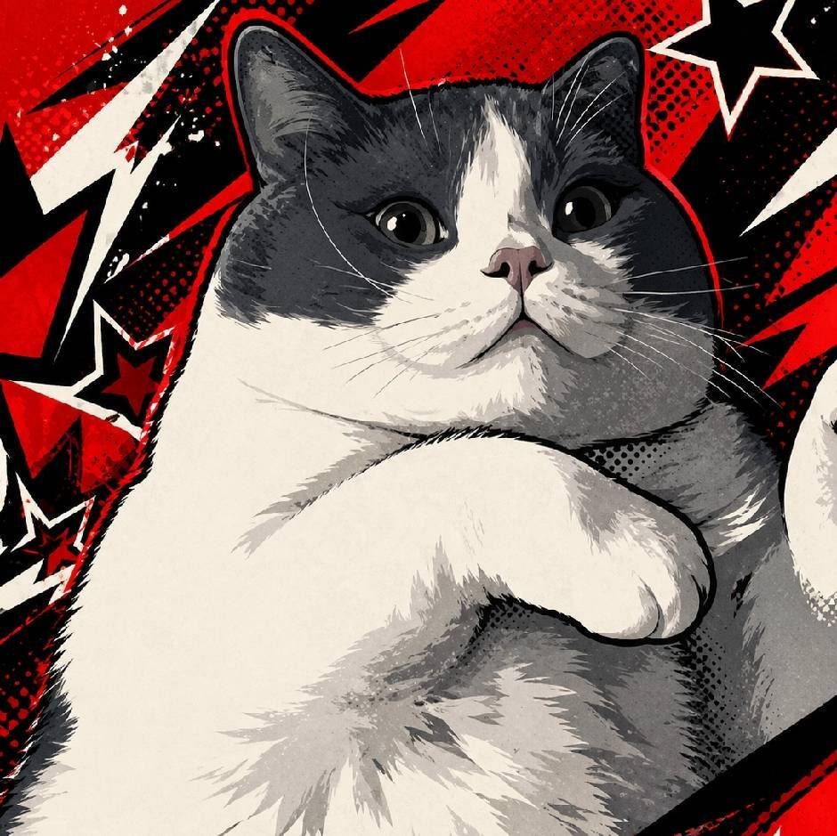
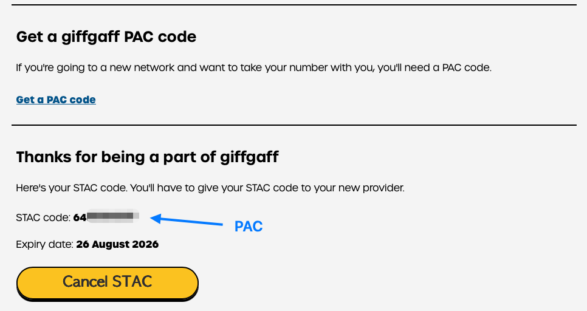
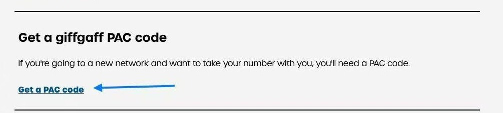
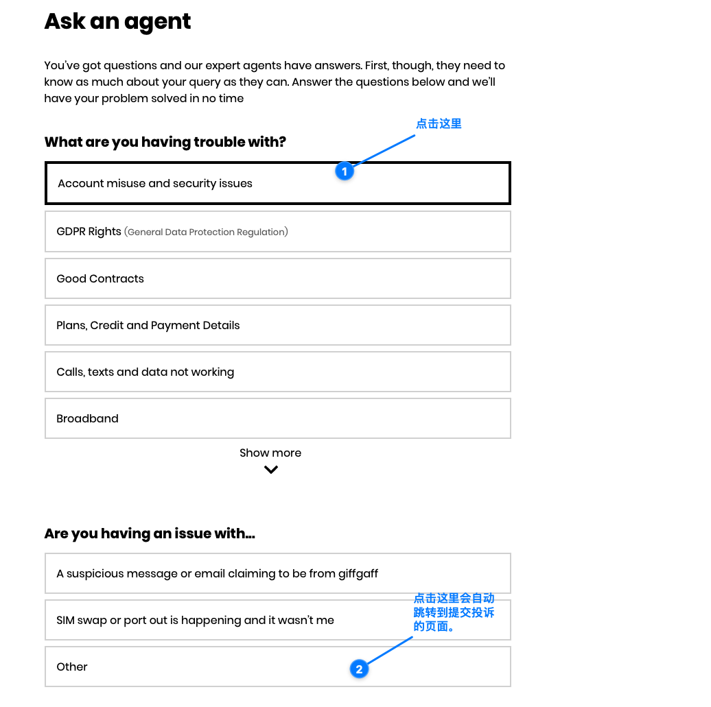
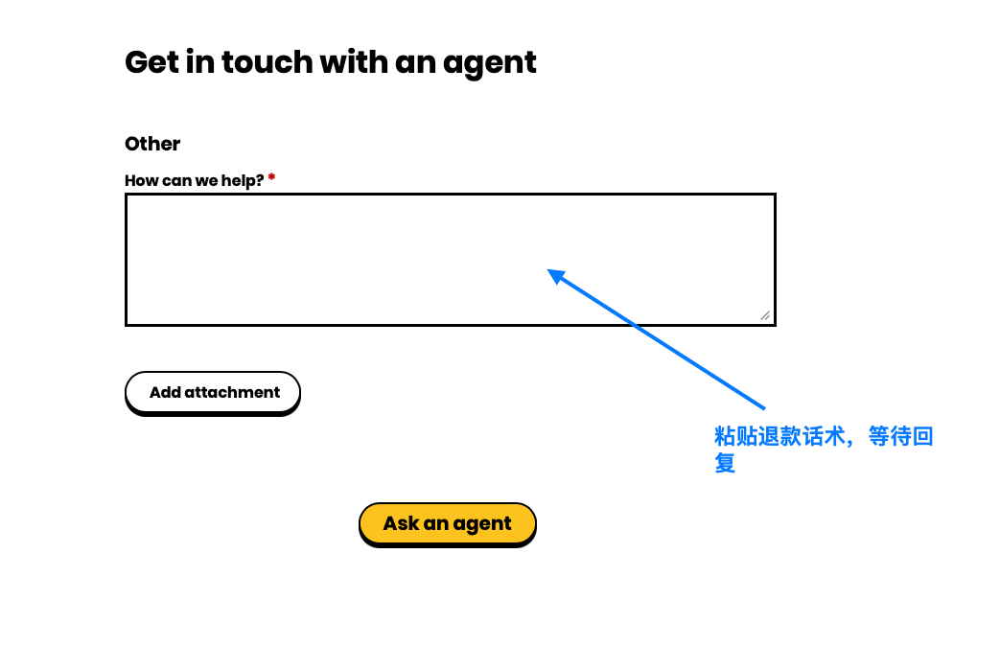
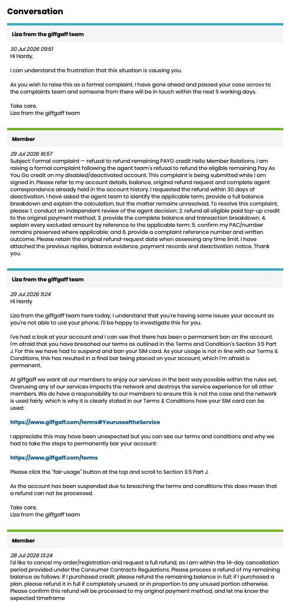

官方实际退回的话费，会按照官方确认并实际到账的退款金额返还给对应客户。

giffgaff 新替代
giffgaff 新替代
查看替代卡与转网教程 →
退款与保存 PAC 后，可把原号码转到已激活 CTExcel 卡
¥128 到手已激活，首月 50GB，Wi‑Fi Calling 已开通；支持 PAC 携号转入、微信绑定和后续微信充值。
REFUND RESCUE KIT · 2026
账号停用后，把余额要回来
先保号码，再提退款。按账号状态选择话术，一键复制后直接提交给官方客服。
微信扫一扫
退款与转号售后协助
官方有回复，先截图发给微信售后
请把官方客服的完整回复截图发来，我们会根据回复内容尽量补充和完善下一轮英文话术，继续争取退回符合条件的话费余额。
退款资格和金额由官方最终审核决定；售后提供话术与沟通协助，不承诺每个账号都能退款成功，也不承担官方驳回后的垫付。
取得 PAC 后请立即截图并记住到期日。PAC 是日后保住原号码、携号转网到其他英国运营商时使用的授权码，需要由客户本人提交给新运营商，请勿公开或随意转发。
oscar_2026year
号码重要？优先拿 PAC。
保存 PAC、余额截图和停用日期作为自己的记录；14 天期限将到时，不要等 PAC，退款请求与 PAC 请求同时提交。
01 · 选路径
你现在属于哪一种？
账号已经被封时，只需要按 SIM 激活至今是否超过 14 天选择话术。
激活不超过 14 天
走取消期退款
余额退回；未使用套餐全额退，已使用套餐按未使用部分比例退。退款发起后通常还需 3–5 个工作日到银行。
前往 14 天内话术 →超过 14 天 / 已停用
走剩余余额退款
引用官方“停用后 30 天内申请剩余余额退款”的说明，要求书面确认余额、可退金额和处理时限。
前往 14 天外话术 →
02 · 保号码
封号后获取 PAC
PAC 用来把原号码转到另一家英国网络，有效期 30 天。
PAC
Porting Authorisation Code
它是“携号转网授权码”
PAC 不是退款码，也不是新号码。它相当于一把临时钥匙：把这串代码交给新的英国运营商，新运营商就能把你的原 giffgaff 号码转过去。
- 1
向 giffgaff 申请拿到标有“PAC code”的代码和到期日
- 2
交给新运营商在新卡的“Keep my number / Transfer number”页面提交
- 3
等待号码转入通常在一个工作日内完成，原号码随后在新卡上使用

别选错
PAC 和 STAC 完全不同
PAC
保留原号码
把原 giffgaff 号码转到新运营商。想继续使用旧号码就选这个。
STAC
放弃原号码
只结束旧服务，不把旧号码带走；切换后原号码会被注销。
截图下半部分其实是 STAC
因为它写着 STAC code 和 Cancel STAC。蓝色箭头虽然标了“PAC”，箭头指向的仍是 STAC。要保留号码，请返回上方点击 Get a PAC code，直到结果明确写着 PAC code。
官网登录申请
登录后进入 Profile and settings，下滑到 Get a giffgaff PAC code，点击 Get a PAC code。
打开 Profile and settings ↗
自助失败时追加这句
My service is currently disabled and the self-service PAC route is unavailable. Please issue my PAC, or escalate this request to the team that can do so, while preserving my number and remaining balance.
投诉入口图解
点这里直接跳转官方投诉链接 ↗
打开页面后，按这两步提交
先从本页复制适合你情况的英文话术，再点击蓝色按钮直接进入官方表单。
会动的蓝色按钮就是官方投诉入口1
选择问题分类
点击 Account misuse and security issues，然后在下一组选项中点击 Other。

2
粘贴话术并提交
把复制好的英文退款话术粘贴到 How can we help?。登录账号提交即可，无需添加附件。


完整沟通案例 001 · 第一阶段已进入投诉 查看真实记录：首次被拒后如何进入正式投诉 完整英文往来按客服页面样式复原，并提供中文翻译和阶段分析；实际被拒后的新回复请交给下方 AI 处理。 查看完整退款案例 →
03 · 第一次投诉
选择第一次退款话术
这里只保留第一次提交所需的话术。按 SIM 激活是否超过 14 天选择并复制；客服拒绝后，不再套用固定模板，直接使用下方 AI 投诉助手。
Hello giffgaff Agent,
I am writing to cancel my registration and request a refund. My SIM was activated within the last 14 days, so this request is being submitted within your published 14-day cancellation period.
As I am submitting this request while signed in, please refer to the account record for the activation date, mobile number, purchases and current balance.
Please refund my remaining credit in full. If I purchased a plan, please refund it in full if completely unused, or refund the unused portion proportionately if it has been partly used.
Please confirm:
1. the amount being refunded, with a breakdown of credit and plan refund;
2. that it will be returned to the original payment method;
3. the date the refund is initiated and the expected arrival timeframe; and
4. my case/reference number.
If the number has not yet been transferred, please issue my PAC and preserve the number while this request is processed.
Thank you.
中文总结
这段话是在告诉客服：账号仍处于激活后 14 天取消期内，要求退还剩余余额；套餐完全没用就全退，部分使用就按未使用比例退。同时要求客服确认退款金额、原支付方式、处理日期、到账时间和工单编号，并保留号码所需的 PAC。
为什么更有利：明确激活日期、余额、四项回复要求，并沿用官方退款口径，减少客服来回追问。
Hello giffgaff Agent,
I am requesting a refund of the remaining Pay As You Go credit on my account following the disabling/deactivation of my service.
This request is being made within 30 days of deactivation. Your published help guidance states that a member may contact an agent to request a refund of credit remaining at the time of deactivation. It also confirms that a PAC may be requested through an agent within 30 days of deactivation.
As I am submitting this request while signed in, please refer to the account record and existing case history for the mobile number, deactivation date, balance and previous correspondence.
Please:
1. preserve and issue my PAC so I can transfer my number;
2. refund all eligible remaining PAYG credit to the original payment method;
3. provide a full balance breakdown, clearly separating paid top-up credit from any bonus/promotional credit and explaining any excluded amount;
4. confirm the card/payment method used for the refund by its type and last four digits; and
5. provide a case/reference number and the expected processing timeframe.
If card details must be re-added before you can process the refund, please tell me exactly where to add them and confirm when the account is ready for the refund.
Please treat this as a billing request in the first instance. If it cannot be resolved by the agent team, please escalate it through the formal complaints process and retain the original submission date.
Thank you.
中文总结
这段话是在停用后 30 天内申请剩余 PAYG 余额退款。要求客服从登录账号里核对停用日期、余额和历史记录，同时提供 PAC、退还符合条件的充值余额、列出赠送余额与不可退金额，并说明退款卡、到账时间和工单编号。
为什么更有利：直接引用当前官方停用退款说明；同时锁定 PAC、余额拆分、原支付方式、case reference 与升级路径。
第一次话术提交后
客服拒绝退款，就把完整往来交给 AI
不要继续复制通用的第二、第三轮模板。把从第一次退款申请到客服最新拒绝回复的全部记录原样粘贴，AI 会针对本次拒绝理由生成下一轮英文投诉文案。
- 1先发送上面的首次话术
- 2保存客服的完整回复
- 3被拒后交给 AI 继续推进
规则依据
14 天内取消政策 ↗
停用后 PAC / 余额退款 ↗
退款帮助 ↗
正式投诉入口 ↗